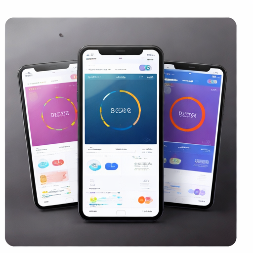

Zabbix monitoringproject
In dit project heb ik gewerkt met Zabbix om systemen en services te monitoren.

Over dit project
Ik heb hosts toegevoegd, monitoring-items ingesteld en triggers aangemaakt om waarschuwingen te krijgen wanneer er problemen zijn.
Daarnaast heb ik gewerkt met ICMP, SNMP en web monitoring om de beschikbaarheid en prestaties van systemen beter op te volgen.
Belangrijkste onderdelen
- Toevoegen van hosts in Zabbix.
- Instellen van monitoring-items en triggers.
- Controleren van systemen met ICMP en SNMP.
- Opvolgen van websites en services via web monitoring.
Gebruikte tools
Zabbix, Linux, ICMP, SNMP, web monitoring, triggers en grafieken.
Doel van het project
Het doel was om problemen sneller te detecteren en een duidelijk overzicht te krijgen van de status van servers, websites en services.
Wat heb ik geleerd?
- Ik heb geleerd hoe monitoring helpt om problemen sneller te ontdekken.
- Ik heb geleerd hoe triggers waarschuwingen kunnen geven bij fouten.
- Ik heb geleerd hoe ICMP, SNMP en web monitoring gebruikt worden in Zabbix.
- Ik heb geleerd hoe grafieken helpen om prestaties beter te analyseren.
Projectoverzicht
| Onderdeel | Beschrijving |
|---|---|
| Type project | Monitoringproject |
| Hoofdtool | Zabbix |
| Focus | Beschikbaarheid, prestaties en meldingen |
| Resultaat | Een overzichtelijke monitoringomgeving voor systemen en services |